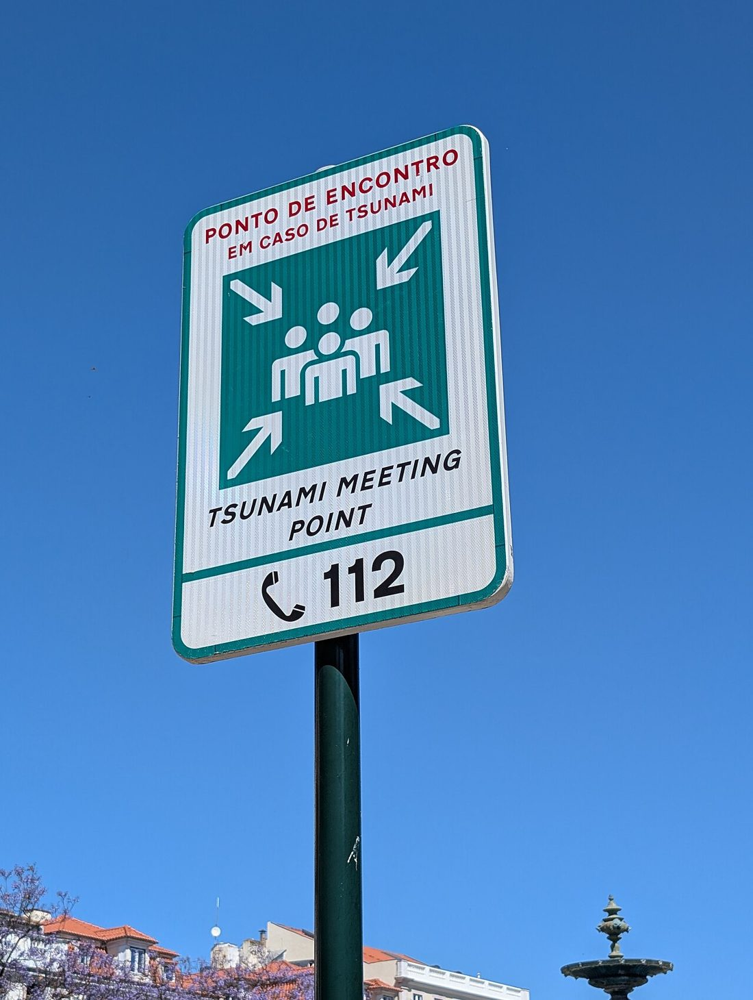

災難很少挑「全家都在家」的時候發生。空襲、地震或突發撤離時，爸媽可能在公司、孩子在學校、有人正在通勤——當通訊中斷、無法互相聯繫，你們事先約好的規則就是唯一的依靠。這篇教你把「走散怎麼辦、聯絡不上怎麼辦」變成一張全家都記得的計畫，並附上可直接填寫的一頁式表格。

會合點是計畫的核心。至少設兩個，地點要具體、全家都認得、步行可達：
別用「在附近碰面」這種模糊說法——要明確到「○○公園正門的溜滑梯旁」。撤離路線與判斷見〈該撤離還是就地避難〉。
這是最多人忽略、卻最關鍵的一招。災區內的電話與網路常常壅塞或中斷，但打到災區以外反而較容易接通。所以指定一位住在外縣市或國外的親友當「共同聯絡窗口」：
網路或訊號很差時，簡訊與通訊軟體的文字訊息比語音通話更容易送出去。事先和家人約好：「打不通就傳訊，還是聯絡不上就各自前往會合點。」通訊全斷時的求救方法見〈通訊中斷時如何求救與接收資訊〉。
手機會沒電、會遺失。每位家庭成員（尤其孩童、長輩）都應隨身帶一張紙本聯絡卡，內容包括：
重要證件（身分證、健保卡、房契、保單）掃描存雲端與手機各一份，紙本影本收進〈緊急避難包〉的防水袋。
危急時刻沒有時間臨時分工，事先講好誰做什麼：
| 任務 | 由誰負責 | 備註 |
|---|---|---|
| 拿避難包／關水電瓦斯 | 離門口或開關最近的成年人 | 離家前若有餘裕再關，安全優先 |
| 照顧幼童 | 指定家長，另一人備援 | 代背幼童裝備、帶安撫物 |
| 協助長輩／身障者 | 指定成員 | 備妥藥物、輔具、老花眼鏡 |
| 帶寵物 | 指定成員 | 牽繩、外出籠、飼料、寵物證件 |
| 對外聯絡 | 先脫離險境者 | 向外地聯絡人回報全家狀況 |
替每位弱勢成員確認：他知道會合點怎麼去嗎？走失時懂得向警察、店員等大人求助並說出聯絡卡資訊嗎？這些都要先教、先練。
把下面這張表填好、印出來，貼在冰箱、放進每個避難包，並讓全家人都拍一張存在手機：
| 項目 | 內容（填入你家的資訊） |
|---|---|
| 近會合點 | ＿＿＿＿＿＿＿＿＿＿＿＿ |
| 遠會合點 | ＿＿＿＿＿＿＿＿＿＿＿＿ |
| 外地聯絡人／電話 | ＿＿＿＿＿＿＿＿＿＿＿＿ |
| 各成員手機 | ＿＿＿＿＿＿＿＿＿＿＿＿ |
| 孩子學校／聯絡方式 | ＿＿＿＿＿＿＿＿＿＿＿＿ |
| 水電瓦斯總開關位置 | ＿＿＿＿＿＿＿＿＿＿＿＿ |
| 避難包放置位置 | ＿＿＿＿＿＿＿＿＿＿＿＿ |
白天災難發生時，孩子多半在學校、你可能在公司。事先弄清楚兩邊的規則，才不會盲目衝去接人反而更危險：
手機很方便，但在災難中很脆弱——沒電、沒訊號、遺失都會讓你瞬間失去所有資訊。因此關鍵資料要數位與紙本並行：
災區內線路常壅塞中斷，打到災區以外反而好接通。全家各自向他報平安、由他轉達，能在彼此打不通時掌握狀況。
至少兩個：住家附近一個、社區外一個。地點要具體、認得、走得到。
先傳簡訊或文字訊息（比通話容易送出），再不行就依約定各自前往會合點。聯絡資訊要有紙本。
指定專人照顧與代背裝備，準備聯絡卡、藥物與輔具，並教會他們怎麼去會合點、怎麼求助。
每半年檢視並實際演練一次，資訊有變（搬家、換號碼、成員異動）就立即更新。
※ 本文為一般防災準備參考，整理自內政部消防署、NCDR、Ready.gov 等公開資訊，不能取代官方即時指示。緊急時請以政府警報與現場專業人員指揮為準。